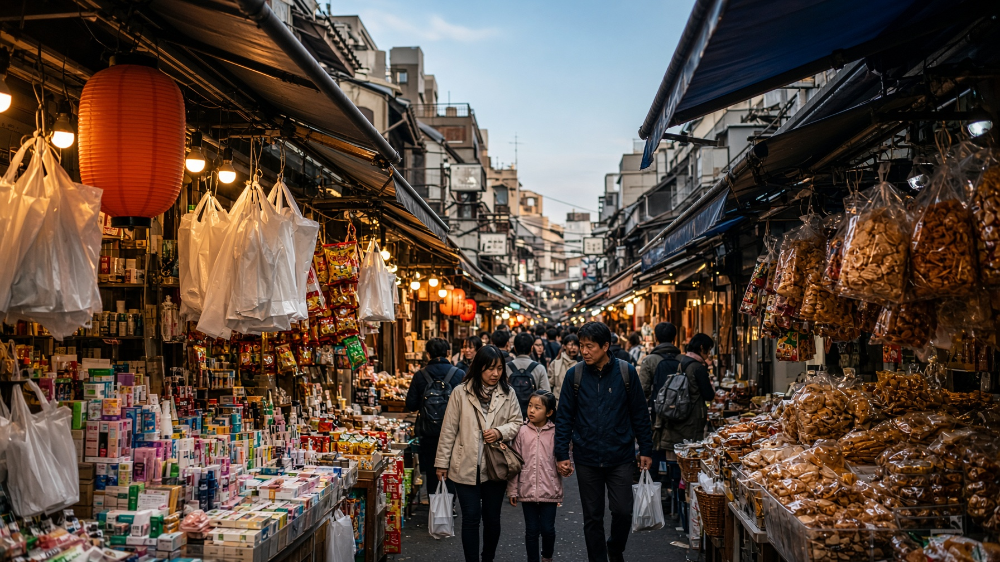

D1 10/29（四）
台北松山 → 東京羽田 → 上野
飛抵羽田後入住上野，傍晚處理 PASS 與藥妝，不安排正式景點。
住宿：ホテルリソル上野
09:00–12:50
中華航空 CI220 松山 → 羽田
09:00 台北松山（TSA）起飛，12:50 抵達東京羽田（HND）。入境與領行李後再往上野。
約 13:40 出發
羽田 → 上野
入境後搭京急空港線轉 JR 山手線或京浜東北線前往上野。一般大眾交通，JR EAST PASS 當日尚未啟用。預計 14:40～15:00 抵達飯店。
15:00–16:00
辦理 JR EAST PASS 與指定席
在 JR 上野站窗口或指定席售票機啟用／領取 JR EAST PASS 5日券（啟用日設為隔日 10/30），並預約後續はやぶさ指定席。
16:00–17:30
上野／御徒町藥妝採買從飯店步行進阿美橫町，比價松本清、SUNDRUG、OS Drug 與唐吉訶德。採買清單見藥妝頁。
17:30–18:30
晚餐
上野站周邊或阿美橫町用餐。不預先指定餐廳，單餐以日幣 2,500 以內為原則。